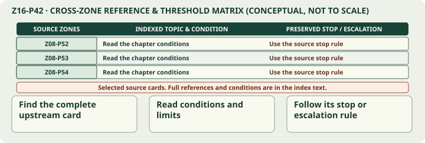

Z16-P42 · Field reference atlas · New manuscript
Material Non-Certification Boundary: Sight Never Proves Load or Safety
Enforce the encyclopedia-wide separation between conceptual material recognition and engineering load, anchor, or chemical safety certifications.
When it applies · Any cross-zone decision involving wild timber, rock ledges, natural fibers, knots, or salvaged scrap.
Equipment · Full offline reader (Z02, Z08, Z09), primary zone cards, and local emergency and agency references.

Actions
- Never infer structural load capacities in pounds, kilograms, or kilonewtons for wild wood spans, shelter roofs, snow trenches, rock anchors, or hand-twisted cordage (Z02-P33, Z08-P52, Z09-P45).[A04, E16, R15, K06]
- Never infer food-contact or drinking-water chemical safety from visual cleanliness of stones, wild clay, galvanized, painted scrap, or driftwood (Z08-P53, Z04-P01).[A04, R12, R14]
- Use manufacturer-rated, inspected commercial hardware and food-grade tested vessels whenever human life safety, overhead loads, or food, water heating are involved.[A04, K06, W11]
Failure recognition · Treating a visual field guide as an engineering specification or food-safety lab test causes structural collapse or heavy-metal poisoning.[E16, R14, K06]
Verify · Non-certification disclaimers stay visible across every shelter, tool, rigging, and material reference.[R15, K06]
Stop or change course · Stop any plan relying on unverified wild materials for climbing, hoisting, overhead shelter loads, or cookware.[R14, R15, K06]
Evidence and editorial notes
- A04 · Minnesota DNR · Minnesota Geology and Glacial History Overview (Current web edition)
- Section: Geological and natural-material cross-zone lookup · Conditions: Linking Z08 materials with Z02 shelter, Z03 fire, Z09 tools, and Z11 compass limits
Support: Material cross-references preserve dust/silica hazards, wet-rock spalling stops, iron-rock compass deflection, and public-land collecting prohibitions.
Limitations: Material summaries never imply structural load ratings or chemical cookware safety. · Conflicting evidence: None noted.
Editorial note: Anchors Z16 materials index. · Specialist reviewer: Geologist and materials reviewer
Primary source · checked 2026-11-25 - E16 · NWS · Wind Safety (current web edition)
- Section: Wind Safety > High Wind Hazards · Conditions: Forecast or developing high winds, squalls, or straight-line winds
Support: High winds topple trees, loft debris, and stress lightweight shelters beyond fabric and anchor limits; relocate out of timbered fall zones and into substantial shelter before gusts peak.
Limitations: Tents and tarps lack standardized wind-speed survival guarantees across soil types and pitch angles. · Conflicting evidence: None; avoids unvalidated mph ratings for improvised pitches.
Editorial note: Drives high-wind shelter inspection, guying limits, and abandonment thresholds. · Specialist reviewer: Weather safety and shelter equipment
Primary source · checked 2026-11-24 - K06 · NPS · Forces and Tools (current web edition)
- Section: Forces and Tools > Simple Machines and Mechanical Advantage · Conditions: Levers, wedges, inclined planes and friction mechanisms
Support: Simple machines trade force for distance (levers, wedges, pulleys); friction, alignment and material strength limit real-world output below ideal ratios.
Limitations: Ideal mechanical advantage ignores friction losses and breaking strength of ropes or anchors. · Conflicting evidence: None; clarifies physical trade-offs without implying engineered load ratings.
Editorial note: Anchors mechanical-advantage, wedge-splitting and pulley/rigging limit cards. · Specialist reviewer: Mechanical engineering and rigging safety
Primary source · checked 2026-11-24 - R12 · U.S. EPA · Protect Your Family from Lead in Soil and Dust (2025)
- Section: Soil contamination and urban/industrial lead hazards · Conditions: Soils near historic structures, roadways, mines, or industrial sites
Support: Soils and clays near older painted structures, smelters, tailings, or roadways may harbor lead or industrial contaminants.
Limitations: Visual texture or color cannot detect lead, arsenic, or chemical contaminants; do not use unverified soil/clay for cookware or food contact. · Conflicting evidence: None noted.
Editorial note: Separates clay plasticity checks from chemical safety. · Specialist reviewer: Environmental health and soil scientist
Primary source · checked 2026-11-25 - R14 · USGS · National Minerals Information Center and Mineral Commodities (Current web edition)
- Section: Metallic ores, sulfides, and heavy-metal mineral toxicity · Conditions: Unidentified metallic-luster minerals, tailings, or bright oxidized crusts
Support: Sulfide ores and metallic minerals can contain lead, arsenic, mercury, or copper compounds hazardous via dust or hand-to-mouth transfer.
Limitations: Do not taste, lick, burn, or process unidentified metallic or brightly crusted minerals; wash hands after handling. · Conflicting evidence: None noted.
Editorial note: Blocks hazardous mineral extraction/handling. · Specialist reviewer: Geochemist and toxicologist
Primary source · checked 2026-11-25 - R15 · Minnesota DNR · Native Trees of Minnesota Identification Reference (Current web edition)
- Section: Regional wood species, grain, bark, and moisture variability · Conditions: Dead downed wood and natural bast fibers in Upper Midwest forests
Support: Wood density, grain straightness, resin content, and decay state vary widely by species, tree part, and moisture history.
Limitations: Visual grain inspection cannot certify structural load capacity; avoid cutting live trees where prohibited and reject punky or cracked wood. · Conflicting evidence: None noted.
Editorial note: Reconciles B007 wood notes with material limits. · Specialist reviewer: Forestry and wood-science specialist
Primary source · checked 2026-11-25 - W11 · CDC · Water Treatment Options When Hiking, Camping, or Traveling (current web edition)
- Section: Using light · Conditions: Portable UV disinfection device on a supported batch size of clear water
Support: Cloudiness interferes with UV. Use the device's stated volume, mixing and cycle instructions.
Limitations: Battery failure, cold battery voltage drop, or container UV opacity can silently defeat treatment. · Conflicting evidence: None; requires pre-clarification for turbid sources.
Editorial note: Requires verifying clarity, rated volume, and completed cycle indicator. · Specialist reviewer: Drinking-water treatment and equipment safety
Primary source · checked 2026-11-24
Source lineage · New manuscript (Z16 P20 governance index) · Classification · New manuscript.